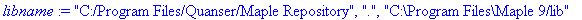
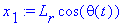

Dynamic Equations for the Rotary Single Inverted Pendulum (SIP)
©
2011 Quanser Consulting Inc.
URL:
http://www.quanser.com
NOTE: This worksheet presents the general dynamic equations modelling a Single Inverted Pendulum mounted on a rotary arm.
Description
-
This worksheet presents the general dynamic equations modelling a single inverted pendulum mounted on a rotary pendulum.
-
Specifically, this worksheet is used to derive the state-space matrices for the Quanser's
Single Inverted Pendulum (SIP)
experiment.
-
The resulting inverted pendulum system has 2-Degrees-Of-Freedom (DOF), for a planar motion.
-
The Lagrange's method is used to obtain the dynamic model of the system.
The
Quanser_Tools
Package
-
The
Quanser_Tools
module defines generic procedures and data in relation to determining the state-space representation of all the Quanser experiments. Specifically, this means deriving and solving the Lagrange's equations of the Quanser systems.
-
The
quanser
repository containing the
Quanser_Tools
package is implemented in the 2 following files:
quanser.ind
and
quanser.lib.
If these two files are not readily available, they can be generated by executing the Maple worksheet titled:
quanser_tools.mws
.
-
To install
the
Quanser_Tools
package, copy the two files
quanser.ind
and
quanser.lib
into a directory of your choice, like for example: "C:\Program Files\Quanser\Maple Repository".
-
To use
the
Quanser_Tools
package in a Maple worksheet, add the path to its disk location to the Maple global variable
libname
. For example, this can be achieved by the following Maple command:
libname :=
"C:/Program Files/Quanser/Maple Repository", libname:
References
-
For an overview of some of the possible control challenges offered by the Quanser Rotary experiments please visit the following link on the Quanser's website:
Rotary Control Challenges
Worksheet Initialization
| > |
restart: interface( imaginaryunit = j ):
|
Choose to generated model for Single-Inverted Pendulum (SIP) or Single Pendulum Gantry (SPG). The gantry is when the pendulum is in the hanging down position.
| > |
Pend_Config := SIP;
#Pend_Config := SPG;
|
| > |
libname := "C:/Program Files/Quanser/Maple Repository", ".", libname;
|

environment variable representing the order of series calculations
Notations
Generalized Coordinates:
's
The generalized coordinates are also called Lagrangian coordinates.
= rotary arm / servo angular position
= the angle of the pendulum about the vertical (for SIP): the zero angle is defined when the pendulum is in the perfect upright position. If using SPG, then this angle is the pendulum about the downward position.
Np = number of links in pendulum
| > |
q := [ theta(t), alpha(t)];
|
Nq = number of Lagrangian coordinates (e.g. here, it is Nq = 2)
Nq is also the number of position states.
qd = first-order time derivative of the generalized coordinates, e.g. position and angular velocities
| > |
qd := map( diff, q, t );
|
Transformation Matrices
From base coordinate to tip of arm: T_0_1 = Rot(Z0, theta)*Trans(X1,Lr)
| > |
T_0_1 := matrix(4,4,[
cos(q[1]),-sin(q[1]),0,L[r]*cos(q[1]),
sin(q[1]),cos(q[1]),0,L[r]*sin(q[1]),
0,0,1,0,
0,0,0,1]);
|
Assume pendulum center of mass if half link length
Inverted Pendulum Configuration: From tip of arm to CM of link 1: T_1_2 = Rot(X1, alpha)*Trans(Z2, l[p]).
| > |
if Pend_Config = SIP then
T_1_2 := matrix(4,4,[
1,0,0,0,
0,cos(q[2]),-sin(q[2]),-l[p]*sin(q[2]),
0,sin(q[2]),cos(q[2]),-l[p]*cos(q[2]),
0,0,0,1]);
else
T_1_2 := matrix(4,4,[
1,0,0,0,
0,cos(q[2]),-sin(q[2]),l[p]*sin(q[2]),
0,sin(q[2]),cos(q[2]),l[p]*cos(q[2]),
0,0,0,1]);
end;
|
CM of link 1 relative to base coordinate: T_0_2 = T_0_1 * T_1_2
| > |
T_0_2 := evalm( T_0_1 &* T_1_2 );
|
Cartesian Coordinates of the Pendulum's Centre Of Gravity
conventions:
1)
corresponds to the pendulum being perfectly vertical, pointing upwards
2) positive rotation of arm,
, is CCW
3) positive rotation of pendulum,
is also CCW.
Absolute 3-dimensional Cartesian position: tip of arm.
| > |
x[1] := T_0_1[1,4];
y[1] := T_0_1[2,4];
z[1] := T_0_1[3,4];
|

Absolute 3-dimensional Cartesian position: center mass of pendulum.
| > |
x[2] := T_0_2[1,4];
y[2] := T_0_2[2,4];
z[2] := T_0_2[3,4];
|
Absolute 3-dimensional Cartesian velocities.
| > |
xd[1] := diff( x[1], t );
yd[1] := diff( y[1], t );
zd[1] := diff( z[1], t );
xd[2] := diff( x[2], t );
yd[2] := diff( y[2], t );
zd[2] := diff( z[2], t );
|
State-Space Variables
-
The chosen states should at least include the generalized coordinates and their first-time derivatives.
-
X is the state vector.
-
In the state vector X: Lagrangian coordinates are first, followed by their first-time derivatives, and finally any other states, as required.
Substitution sets for the states (to obtain time-independent state equations).
| > |
subs_Xq := { seq( q[i] = X[i], i=1..Nq ) };
subs_Xqd := { seq( qd[i] = X[i+Nq], i=1..Nq ) };
|
![subs_Xqd := {diff(theta(t),t) = X[3], diff(alpha(t),t) = X[4]}](images/rotpen30.gif)
Substitution set for the input(s).
set the input to be the motor voltage:
| > |
#subs_U := { V[m] = U[1] }:
|
set the input to be the torque applied by the motor shaft,
(if not expressed as a function of the motor voltage):
| > |
subs_U := { tau[m] = U[1] }:
|
Nu = number of inputs; U = input (row) vector (e.g. U = [ V[m] ] )
substitution set for the position states' second time derivatives
| > |
subs_Xqdd := { seq( diff( q[i], t$2 ) = Xd[i+Nq], i=1..Nq ) };
|
second time derivatives of the position states (written as time-independent variables).
The set of unknowns is obtained from this list to solve the Lagrange's equations of motion.
| > |
Xqdd := [ seq( Xd[i+Nq], i=1..Nq ) ];
|
substitution set to linearize the state-space matrices (i.e. A and B)
about the quiescent null state vector (small-displacement theory)
| > |
subs_XUzero := { seq( X[i] = 0, i=1..2*Nq ), seq( U[i] = 0, i=1..Nu ) }:
|
Nx = dim( X ) = total number of states (should be greater than or equal to: 2 * Nq)
Ny = chosen number of outputs
| > |
Nx := 2 * Nq + 0:
Ny := Nq:
|
Total Potential and Kinetic Energies of the System
The total potential and kinetic energies are needed to calculate the Lagrangian of the system.
Total Potential Energy:
The total potential energy can be expressed in terms of the generalized coordinates alone.
V[e] = Total Elastic Potential Energy of the system
V[g] = Total Gravitational Potential Energy of the system
| > |
V[g] := potential_energy( 'gravity', M[p], g, z[2] );
|
V[T] = Total Potential Energy of the system
| > |
V[T] := simplify( V[g] + V[e] );
|
Total Kinetic Energy:
The total kinetic energy can be expressed in terms of the generalized coordinates and their first-time derivatives.
= kinetic energy due to rotation of arm
= moment of inertia of rotary arm.
| > |
Tr[1] := kinetic_energy( 'rotation', J[r], qd[1] );
|
The pendulum motion is composed of one rotation and one translation. The rotation and translation directions of the link are orthogonal.
Rotational Pendulum Energy:
= pendulum absolute angular velocity
Tr[2] = pendulum rotational kinetic kinergy: set to zero since joint does not move around a lot.
| > |
Tr[2] := kinetic_energy( 'rotation', J[p], qd[2] );
|
Translational Pendulum Energy:
v[2] = pendulum cartesian velocity (magnitude)
Tt[2] = pendulum translational kinetic kinergy
| > |
v[2] := n_norm( [ xd[2], yd[2], zd[2] ], 2 ):
Tt[2] := kinetic_energy( 'translation', M[p], v[2] );
|
![Tt[2] := 1/2*M[p]*((1/2*cos(theta(t))*diff(theta(t),t)*L[p]*sin(alpha(t))+1/2*sin(theta(t))*L[p]*cos(alpha(t))*diff(alpha(t),t)-L[r]*sin(theta(t))*diff(theta(t),t))^2+(1/2*sin(theta(t))*diff(theta(t),t...](images/rotpen44.gif)
![Tt[2] := 1/2*M[p]*((1/2*cos(theta(t))*diff(theta(t),t)*L[p]*sin(alpha(t))+1/2*sin(theta(t))*L[p]*cos(alpha(t))*diff(alpha(t),t)-L[r]*sin(theta(t))*diff(theta(t),t))^2+(1/2*sin(theta(t))*diff(theta(t),t...](images/rotpen45.gif)
Total kinetic energy of rotary pendulum.
| > |
T[T] := Tr[1] + Tr[2] + Tt[1] + Tt[2];
T[T] := collect( T[T], diff ):
|
Generalized Forces:
's
The non-conservative forces corresponding to the generalized coordinates are:
![tau[m]](images/rotpen51.gif) and the viscous damping forces, where
and the viscous damping forces, where
= torque generated by the motor driving the arm
= arm viscous friction torque coefficient (a.k.a. viscous damping)
= pendulum 1 viscous friction torque coefficient (a.k.a. viscous damping)
Uncomment lines to set
and/or
![B[p]](images/rotpen56.gif) = 0 if viscous dampings are neglected.
= 0 if viscous dampings are neglected.
Q[i] = generalized force applied on generalized coordinate q[i]
| > |
Q[1] := tau[m] - D[r] * qd[1];
|
| > |
Q[2] := - D[p] * qd[2];
|
![tau[m]](images/rotpen59.gif) = torque produced by the motor at the motor pinion (i.e. after the gearbox): arm driving torque
= torque produced by the motor at the motor pinion (i.e. after the gearbox): arm driving torque
rm: comment the following line out if
, uncomment it if
| > |
#tau[m] := eta[g] * K[g] * eta[m] * K[t] * ( V[m] - K[g] * K[m] * qd[1] ) / R[m];
|
| > |
Q := [ seq( Q[i], i=1..Nq ) ];
|
Euler-Lagrange's Equations
For a
N
-DOF system, the Lagrange's equations can be written:
for
through
where:
's are special combinations of external forces and called the
generalized forces,
, ...,
, are
N
independent coordinates chosen to describe the system and called the
generalized coordinates
,
and
 is the
Lagrangian
of the system.
is the
Lagrangian
of the system.
is defined by:
where
is the total kinetic energy of the system and
the total potential energy of the system.
| > |
EOM_orig := lagrange_equations( T[T], V[T], q, Q );
|
this is to display the EOM's
| > |
EOM_orig := collect( EOM_orig, { seq( diff( q[i], t$2 ), i=1..Nq ), seq( diff( q[i], t ), i=1..Nq ), seq( q[i], i=1..Nq ) } );
|
Express the Euler-Lagrange equations of motion as functions of the states:
1) substitute (i.e. name) the acceleration states first!
2) then substitute the velocity states!
3) and only after, the position states, and the inputs!
| > |
EOM_states := subs( subs_Xqd, subs( subs_Xqdd, EOM_orig ) ):
|
| > |
EOM_states := subs( subs_Xq, subs_U, EOM_states ):
|
Linearization in the EOM's
of the Trigonometric Functions
Linearization of the equations of motion around the quiescent point of operation (in order to solve them).
Here, linearization around the zero angles, i.e. for small-amplitude oscillations.
Linearization around: alpha0 = 0, and alpha_dot0 = 0
Generalized series expansions of the trigonometric functions is used (for small angles).
| > |
for i from 1 to Nq do
for k from 1 to Np do
EOM_ser[i] := subsop( 1 = convert( series( op( 1, EOM_ser[i] ), X[ k+1 ] ), polynom ), EOM_ser[i] );
end do:
EOM_ser[i] := simplify( EOM_ser[i] );
end do:
|
Additional Insight: Inertia (or mass) Matrix: Fi
The nonlinear system of equations resulting from the Lagrangian mechanics can be written in the following matrix form:
F( q ) . qdd + G( q, qd ) . qd + H( q ) . q = L( q, qd, u )
F, G, and H are called, respectively, the mass, damping, and stiffness matrices.
They are symmetric in form.
The inertia (a.k.a. mass) matrix, F, gives indications regarding the coupling existing in the system.
| > |
Fi := Matrix( Nq, Nq ):
|
| > |
for i from 1 to Nq do
for k from 1 to Nq do
Fi[ i, k ] := simplify( diff( op( 1, EOM_states[i] ), Xd[k+Nq] ) );
Fi[ i, k ] := collect( combine( Fi[ i, k ], trig ), cos );
end do;
end do:
|
Linearization of the inertia matrix for small-displacements
| > |
Fi_lin := Matrix( Nq, Nq ):
|
| > |
for i from 1 to Nq do
for k from 1 to Nq do
Fi_lin[ i, k ] := Fi[ i, k ];
Fi_lin[ i, k ] := convert( series( Fi_lin[ i, k ], X[ 2 ] ), polynom );
Fi_lin[ i, k ] := subs( subs_XUzero, Fi_lin[ i, k ] );
end do;
end do:
|
Solving the Euler-Lagrange's Equations
Reverse State Substitution for Pretty Display of the Solved EOM's
only for pretty print
| > |
subs_Xq_rev := { seq( X[i] = q[i], i=1..Nq ) }:
subs_Xqd_rev := { seq( X[i+Nq] = qd[i], i=1..Nq ) }:
|
| > |
#subs_U_rev := { U[1] = V[m] }:
subs_U_rev := { U[1] = tau[m] }:
|
| > |
eom_collect_list := { seq( diff( q[i], t ), i=1..Nq ), seq( q[i], i=1..Nq ), J[arm], J[p] };
|
Solution to the Non-Linear Equations of Motion
Solve the non-linear form of the equations of motion for the states' second time derivatives
| > |
Xqdd_solset_nl := solve( convert( EOM_states, set ), convert( Xqdd, set ) ):
|
| > |
assign( Xqdd_solset_nl );
|
| > |
for i from 1 to Nq do
Xd_nl[i+Nq] := simplify( Xd[i+Nq] ):
unassign( 'Xd[i+Nq]' ):
end do:
|
pretty display w.r.t. the named system states
| > |
for i from 1 to Nq do
Xd_nl[i+Nq] := simplify( subs( subs_U_rev, subs_Xq_rev, subs_Xqd_rev, Xd_nl[i+Nq] ) ):
end do:
|
| > |
for i from 1 to Nq do
diff( qd[i], t ) = collect( Xd_nl[i+Nq], eom_collect_list );
end do:
|
Solution to the Linearized EOM's
Solve the linear form of the equations of motion for the states' second time derivatives
| > |
Xqdd_solset_ser := solve( convert( EOM_ser, set ), convert( Xqdd, set ) ):
|
| > |
assign( Xqdd_solset_ser );
|
Moreover, for small angles
| > |
subs_avsq_list := { X[Nq+2]^2 = 0, X[Nq+3]^2 = 0 }:
|
| > |
for i from 1 to Nq do
Xd[i+Nq] := subs( subs_avsq_list, Xd[i+Nq] );
end;
|
![Xd[3] := -1/2*(M[p]^2*L[p]^4*X[2]*X[3]*X[4]+2*M[p]*L[p]^2*D[r]*X[3]-M[p]^2*L[p]^3*L[r]*X[2]*X[3]^2+2*M[p]^2*L[p]^2*L[r]*X[2]*g+4*M[p]*L[p]*L[r]*D[p]*X[4]+4*J[p]*M[p]*L[p]^2*X[2]*X[3]*X[4]-8*J[p]*U[1]+8...](images/rotpen85.gif)
pretty display w.r.t. the named system states
| > |
for i from 1 to Nq do
diff( qd[i], t ) = collect( subs( subs_U_rev, subs_Xq_rev, subs_Xqd_rev, Xd[i+Nq] ), eom_collect_list );
end do;
|
Determine the System State-Space Matrices: A, B, C, and D
| > |
A_ss := Matrix( Nx, Nx ):
|
| > |
A_ss := deriveA( Xqdd, A_ss, Nq, subs_XUzero ):
|
| > |
B_ss := Matrix( Nx, Nu ):
|
| > |
B_ss := deriveB( Xqdd, B_ss, Nq, subs_XUzero ):
|
| > |
C_ss := IdentityMatrix( Ny, Nx ):
'C' = C_ss;
|
| > |
D_ss := Matrix( Ny, Nu, 0 ):
'D' = D_ss;
|
Write A, B, C, and D to a Matlab file
Save the state-space matrices A, B, C and D to a MATLAB file.
| > |
if Pend_Config = SIP then
Matlab_File_Name := "ROTPEN_ABCD_eqns.m":
else
Matlab_File_Name := "ROTPEN_GANTRY_ABCD_eqns.m":
end;
|
unassign variables, when necessary, for those present in the "Matlab_Notations" substitution set
| > |
if assigned( D[r] ) then
unassign( 'D[r]' );
end if;
|
| > |
if assigned( D[p] ) then
unassign( 'D[p]' );
end if;
|
| > |
if assigned( J[r] ) then
unassign( 'J[r]' );
end if;
|
| > |
if assigned( J[p] ) then
unassign( 'J[p]' );
end if;
|
substitution set containing a notation consistent with that used in the MATLAB design script(s)
| > |
Matlab_Notations := {M[r] = Mr, M[p]=Mp, l[p] = lp, L[p]=Lp, J[r] = Jr, J[p] = Jp, D[r] = Dr, D[p] = Dp, K[t] = Kt, K[m] = Km, K[g] = Kg, R[m] = Rm, eta[m] = eff_m, eta[g] = eff_g}:
|
| > |
if Pend_Config = SIP then
Experiment_Name := "SRV02 Rotary Inverted Pendulum":
else
Experiment_Name := "SRV02 Rotary Gantry":
end;
|
| > |
write_ABCD_to_Mfile( Matlab_File_Name, Experiment_Name, Matlab_Notations, A_ss, B_ss, C_ss, D_ss );
|
Procedure Printing
default:
| > |
interface( verboseproc = 1 );
|
| > |
eval( lagrange_equations ):
|
Click here to go back to top: Description Section.